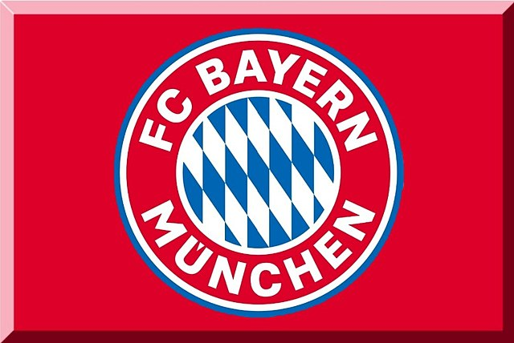

Bayern Munich
Es el club más exitoso en la historia de la Bundesliga, con 32 títulos de liga, incluido el campeonato alemán de 1932, cuando el torneo aún no tenía su formato unificado actual. También es la Copa y Supercopa de Alemania, con 20 y 10 trofeos respectivamente.
A nivel internacional, el Bayern quedó tercero con un voto menos que el Manchester United en la elección del club del siglo de la FIFA, mientras que en el estudio realizado por la IFFHS para determinar el mejor club del siglo XX ocupó la novena y quinta posición a nivel mundial y Europa respectivamente. Asimismo, es uno de los cinco equipos que se ha ganado el derecho a conservar la titularidad de la Copa de Europa, y ostenta la distinción de múltiples campeones del torneo -tras ganarla consecutivamente en 1974, 1975 y 1976-. También es uno de los tres equipos para lograr el triplete y también ganar el Mundial de Clubes ese mismo año. Tenga en cuenta que Juventus de Turín, Ajax de Ámsterdam, Manchester United y Chelsea son los otros cuatro clubes que han ganado las tres grandes competiciones; la Liga de Campeones, la Recopa de Europa y la Copa de la UEFA. Además, junto con el Barcelona, son los únicos clubes europeos que han ganado dos veces el triplete continental, y también los dos únicos clubes del mundo que han conseguido el sexteto.
